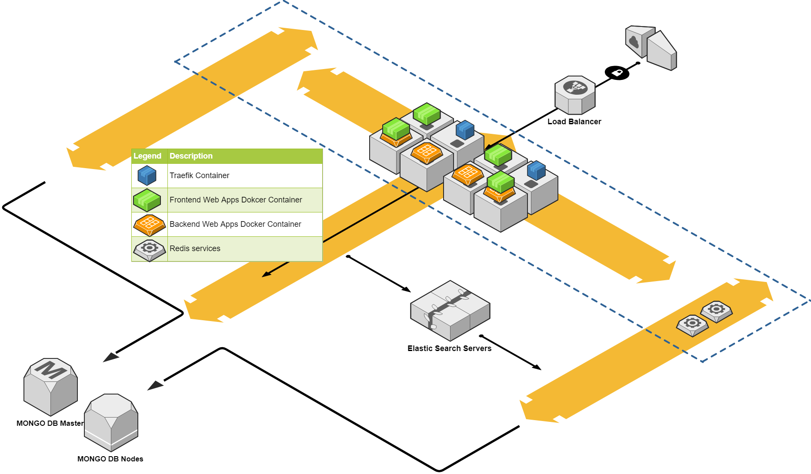

Docker Swarm Stack with Traefik solution
Architect diagram

High level explanation
Lets say you have 8 VM Nodes showing as the Gray Box in the diagram above
You plan to build a few fronttier web applications
- One web UI app written in TS or JS listening on port 5001
- One Web REST API app writtern in DotNet Core listening on port 5002
- One web GraphQL API app writtern in Javascript listening on port 5003
You want to use the following URL to access these services
- Web UI app: http://yourdomain.com/www
- REST API app: http://yourdomain.com/api
- GraphQL API app: http://yourdomain.com/graphql
Traefik instance here can help, it works just like a reverse proxy.
So based on a frontend rule like "traefik.frontend.rule=PathPrefixStrip:/www, it will allow the request to be redirected/forwared to the backend service for the Web UI app
This will be the same for backtier applications.
You might want to run a few backtier app too
- One backend OSS app listening on port 60001
- One backend Billing app listening on port 60002
- One backend media app listing on port 60003
You want to access them from the fronttier containers using URL like these:
- Backend OSS app: http://backtier/oss/v1
- Backend Billing app: http://backtier/billing/v1
- Backend Media app: http://backtier/media/v1
- Backend Media app version 2: http://backtier/media/v2
Now we need a 2nd Traefik instance to handle these ones
Both of these 2 Traefik instances will listen on port 80 and 443, but only the fronttier Traefik instance docker container exposed/mapped to Node port 80 and 443, the backtier mapped to different ports or simply no need to map to Node Ports
All the frontend containers can use http://backtier to access the backtier Traefik service anyway.
Because we allow any container to deploy on any hosts to provide maximum flexibility, we will use a trick to differentiate which contains should be managed by which Traefik instance
The way to achieve that is to use a tag on the Traefik service like "--constraints=tag==traefik-fronttier"
All the containers with a tag like traefik-tags=traefik-fronttier will be associated only to the "fronttier" Traefik instance
The same type of config works for backtier apps as well.
Traefik service act as load-balancer
There are 2 Traefik instances to handle both fronttier and backtier services
Note:
"--constraints=tag==traefik-fronttier"controls only the containers withtraefik-tags=traefik-fronttiertags will be controlled by thefronttiertraefik controller"--constraints=tag==traefik-backtier"controls only the containers withtraefik-tags=traefik-backtiertags will be controlled by thebacktiertraefik controllerrestart_policyset tocondition: anywill allow these 2traefikcontainer/service to auto restart after node reboot or docker daemon reboot.constraints: [node.role == manager]will force these 2traefikservices to run only on Swarm Manager role nodes
version: '3.3'
networks:
frontend:
driver: overlay
attachable: true
volumes:
data:
services:
fronttier:
image: devmr1oktodock1:5000/traefik:1.7
command:
- "--docker"
- "--docker.swarmmode=true"
- "--docker.domain=docker.localhost"
- "--docker.watch=true"
- "--docker.exposedbydefault=true"
- "--docker.endpoint=unix:///var/run/docker.sock"
- "--constraints=tag==traefik-fronttier"
- "--web"
ports:
- "80:80" # The HTTP port
- "443:443"
- "8000:8080" # API
volumes:
- /var/run/docker.sock:/var/run/docker.sock # So that Traefik can listen to the Docker events
networks:
- frontend
labels:
- "traefik.enable=false"
deploy:
placement:
constraints: [node.role == manager]
restart_policy:
#condition: on-failure
condition: any
backtier:
image: devmr1oktodock1:5000/traefik:1.7
command:
- "--docker"
- "--docker.swarmmode=true"
- "--docker.domain=docker.localhost"
- "--docker.watch=true"
- "--docker.exposedbydefault=true"
- "--docker.endpoint=unix:///var/run/docker.sock"
- "--constraints=tag==traefik-backtier"
- "--web"
- "--loglevel=DEBUG"
ports:
- "7180:80" # The HTTP port
- "7443:443"
- "7880:8080" # API
volumes:
- /var/run/docker.sock:/var/run/docker.sock # So that Traefik can listen to the Docker events
networks:
- frontend
labels:
- "traefik.enable=false"
deploy:
placement:
constraints: [node.role == manager]
restart_policy:
condition: any
Frontier service example
The following simulate a simple fronttier webapp
Note:
-
extra_hostsare the list of the hosts
Docker will put them into the container's /etc/hosts file
This sample lists external IP for theredis,mongodbandconsulservices.
extra_hostswill allow apps in docker container to communicate to external services -
constraints: - node.role == workerset the service contains to run only in nodes whose role is aworker -
- "traefik.basic.port=5000"this is the port for ourwebapp:1.1service. This webapp listens and exposes on port 5000 - "traefik.frontend.rule=PathPrefixStrip:/webapp"this is Traefik setting for URL mapping. Any request to /webapp will be forwarded to port 5000 (the webapp service itself)"traefik.backend=webapp"set the name of the service Traefik will forward the request to, which is the service itself- "traefik.docker.network=okto_frontend"this is the Dockeroverlaynetwork which Traefik and all services use to communicate- "traefik.tags=traefik-fronttier"is to set thewebappservice to associate with thetraefik-fronttierTraefik instance
version: "3.3"
services:
webapp:
image: devmr1oktodock1:5000/webapp:1.1
extra_hosts:
- "redis:172.25.83.76"
- "mongodb:172.25.83.64"
- "consul:172.25.83.61"
networks:
- frontend
deploy:
placement:
constraints:
- node.role == worker
restart_policy:
condition: on-failure
labels:
- "traefik.enable=true"
- "traefik.basic.port=5000"
- "traefik.basic.protocol=http"
- "traefik.backend=webapp"
- "traefik.frontend.rule=PathPrefixStrip:/webapp"
- "traefik.docker.network=okto_frontend"
- "traefik.backend.loadbalancer.swarm=true"
- "traefik.tags=traefik-fronttier"
Backtier service example
whoami:
image: devmr1oktodock1:5000/whoami:latest
extra_hosts:
- "redis:172.25.83.76"
- "mongodb:172.25.83.64"
- "consul:172.25.83.61"
networks:
- frontend
deploy:
placement:
constraints:
- node.role == worker
restart_policy:
condition: on-failure
labels:
- "traefik.enable=true"
- "traefik.basic.port=80"
- "traefik.basic.protocol=http"
- "traefik.backend=whoami"
- "traefik.frontend.rule=PathPrefixStrip:/whoami"
- "traefik.docker.network=okto_frontend"
- "traefik.backend.loadbalancer.swarm=true"
- "traefik.tags=traefik-backtier"
networks:
frontend:
driver: overlay
attachable: true
Steps to deploy and test
#Run this to deploy
docker stack deploy -c docker-traefik-without-local-volumn.yml okto
#Check if 2 instance's API interface (it was started using the --web flag in the yml)
curl --noproxy '*' http://devmr1oktodock1:8000/api
curl --noproxy '*' http://devmr1oktodock1:7880/api
Once these 2 Traefik instances are running well, deploy both fronttier and backtier apps
#Run this to deploy
docker stack deploy -c docker-webapp.yml okto
#Check the services
curl --noproxy '*' http://devmr1oktodock1/webapp
curl --noproxy '*' http://devmr1oktodock1:7180/whoami
The following commands will scale the services to run multiple instances then check their status
[root@devmr1oktodock1 multiple-traefik-stack]# docker service scale okto_webapp=3
okto_webapp scaled to 3
overall progress: 3 out of 3 tasks
1/3: running [==================================================>]
2/3: running [==================================================>]
3/3: running [==================================================>]
verify: Service converged
[root@devmr1oktodock1 multiple-traefik-stack]# docker service ps okto_webapp
ID NAME IMAGE NODE DESIRED STATE CURRENT STATE ERROR PORTS
ldae6tup6v8s okto_webapp.1 devmr1oktodock1:5000/webapp:1.1 devmr1oktodock3.br.devrep.tv.telus.net Running Running 37 minutes ago
etexcwod5tux okto_webapp.2 devmr1oktodock1:5000/webapp:1.1 devmr1oktodock3.br.devrep.tv.telus.net Running Running 14 seconds ago
klopqgsbw2pe okto_webapp.3 devmr1oktodock1:5000/webapp:1.1 devmr1oktodock3.br.devrep.tv.telus.net Running Running 14 seconds ago
[root@devmr1oktodock1 multiple-traefik-stack]# docker service ps okto_whoami
ID NAME IMAGE NODE DESIRED STATE CURRENT STATE ERROR PORTS
ojzt1rgpxx4i okto_whoami.1 devmr1oktodock1:5000/whoami:latest devmr1oktodock2.br.devrep.tv.telus.net Running Running 10 minutes ago
ji9aga2xq4e0 okto_whoami.2 devmr1oktodock1:5000/whoami:latest devmr1oktodock1.br.devrep.tv.telus.net Running Running 9 minutes ago
jbnkom5oiv2a okto_whoami.3 devmr1oktodock1:5000/whoami:latest devmr1oktodock3.br.devrep.tv.telus.net Running Running 9 minutes ago
ww7315qshpzd okto_whoami.4 devmr1oktodock1:5000/whoami:latest devmr1oktodock3.br.devrep.tv.telus.net Running Running 9 minutes ago